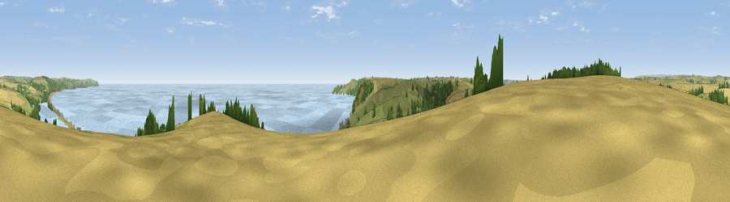

Viewpoint near Torcross
#2171 in England · top 6% of its area beats it · near Torcross · path 278 mWhere it is
The exact computed spot (SX 81788 41675). Click the marker for map links.
Public access: the nearest public right of way is about 278 m away — the final stretch may cross private land. Computed from Natural England's CRoW access layer and OpenStreetMap rights of way — not the legal definitive map. Always verify locally.
The view, rendered

A 360° render of this exact spot computed from the terrain model, tree cover and land cover — summer colours, afternoon light, calibrated against photographs of famous viewpoints. Real trees, hedges and buildings will differ in detail.
The panorama
Grey silhouette: terrain skyline in each direction (720 bearings, Earth curvature and refraction included). Dashed green: skyline with trees (+15 m) and buildings (+8 m) as obstacles. Blue strip: how far the ground is visible on each bearing.
Where the view opens
Wedge length = distance to the farthest visible ground on that bearing (vegetation-aware). Rings at 10, 25 and 50 km.
What fills the view
53% water · 27% grassland · 9% cropland · 9% woodland ·
Angular shares of the visible panorama (visual magnitude), not map area. Landscape diversity 0.51 (0–1 Shannon).
Key numbers
More beautiful places nearby
The staircase of upgrades: each row has a higher view potential than everything closer. Driving times are estimates from straight-line distance, calibrated against real road routing — check an actual route before setting out.
| Place | Direction | Drive | Score |
|---|---|---|---|
| Viewpoint near Beesands | S · 2 km | ~5 min | 80.9 |
| Viewpoint near South Hallsands | S · 4 km | ~10 min | 81.2 |
| Viewpoint near South Hallsands | S · 4 km | ~10 min | 82.5 |
| Viewpoint near East Prawle | SW · 7 km | ~15 min | 84.6 |
| High Peak | NNE · 53 km | ~74 min | 85.3 |
| Pencarrow Head | W · 67 km | ~90 min | 86.0 |
| Golden Cap | NE · 77 km | ~101 min | 88.7 |
| The Knoll | NE · 85 km | ~109 min | 91.0 |
50.26319, -3.65988 · source: screening · position refined by local search. Computed location — check access rights before visiting.